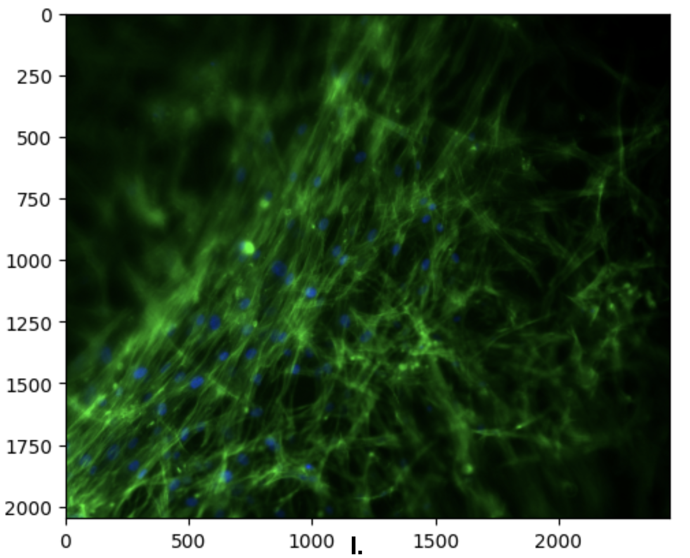
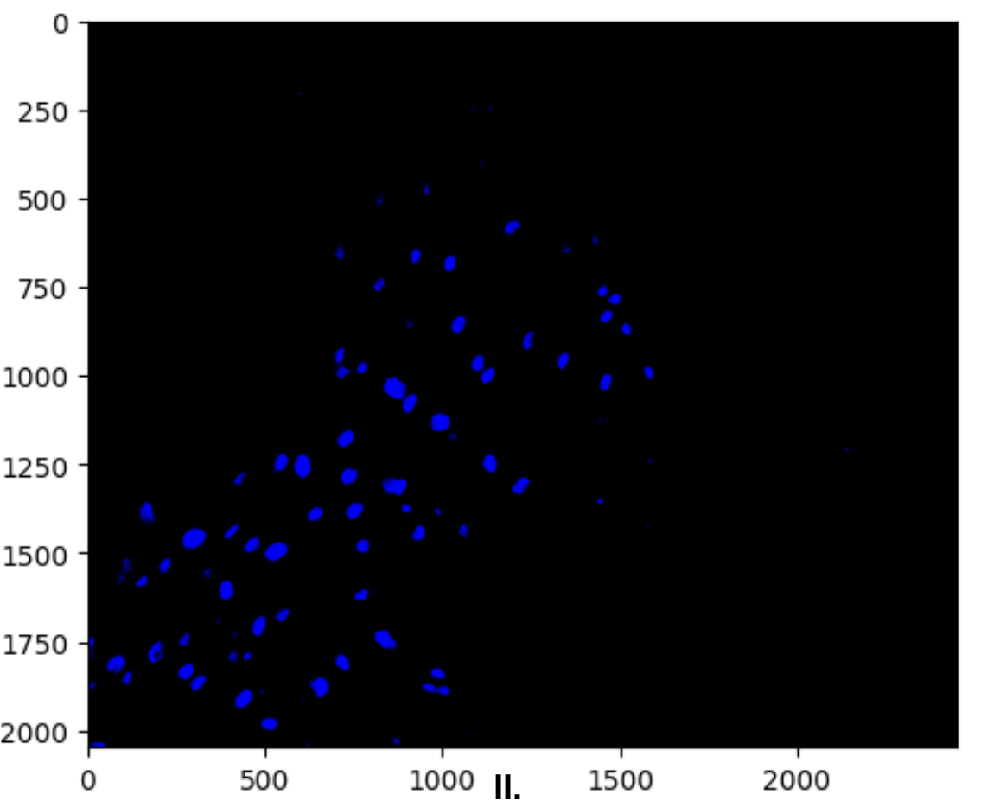
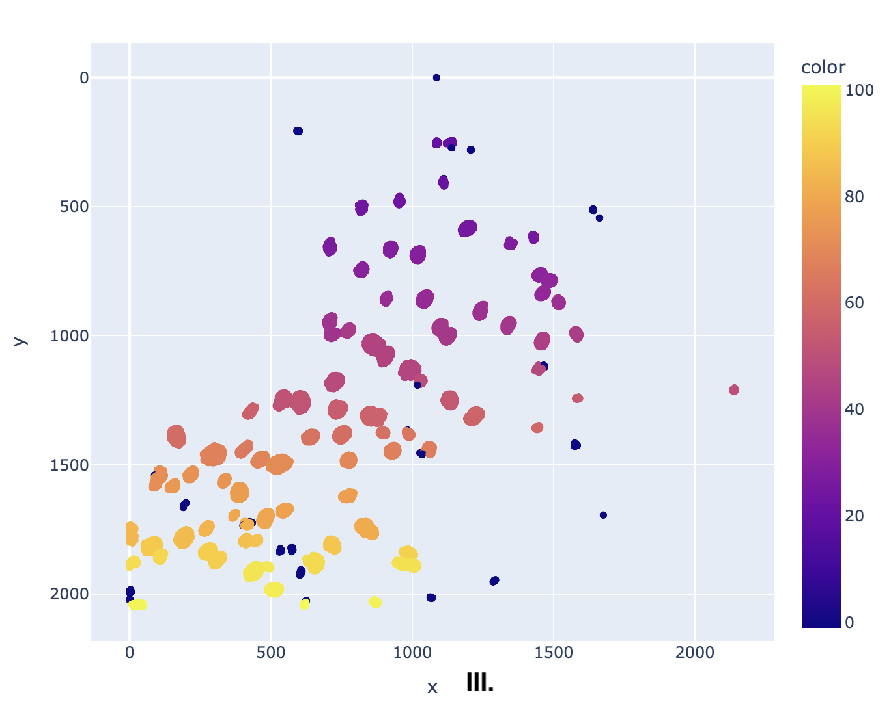
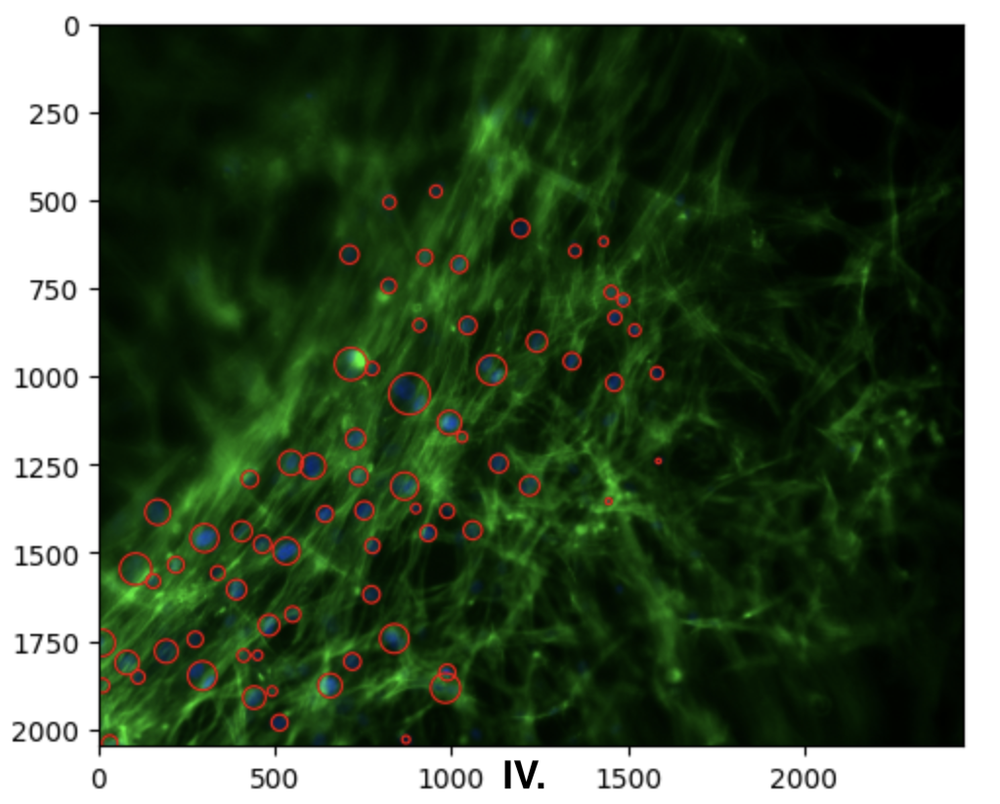

A Deep Learning Based Cell Counter:
Quantifying cell behaviors based on microscopy images can be challenging for researchers. First, manually counting cells is a tedious and time-consuming task, and second, obscured regions can be easily overlooked. In this project, I propose a deep learning algorithm using a binary classification method to address these challenges.
The training data is prepared by selectively taking screenshots of blue, green, and black regions from the original microscopy image. A program is then used to label these regions as 1 (blue) or 0 (not blue). Since blue regions are smaller compared to non-blue regions, a minimum size threshold is set for blue regions. This threshold helps identify small regions, allowing for random sampling of points from the image. These sampled points are then appended to the RGB information list of the image, ensuring that larger images do not disproportionately influence the training results. Similarly, thresholds were defined for green and black regions, but for these two types, both minimum and maximum thresholds were established. After creating a 3D visualization plot for the HSV values for all of the data point, it is observed that there is significant overlap between green and blue region. Without filtering, the final processed image usually overclassified blue region. Therefore, blue in overlapping region was reduced by 99.9%(determined experimentally). Leaving only a small amount of "healthy" overlaps, the comparison before and after filtering can be seen in Supplementary a.
The neural network model consists of an input layer, three hidden layers, and an output layer (Figure A). To train the model, RGB values from the images are first converted into HSV format. The HSV information is then used as input, passed through the three hidden layers, and finally processed in the output layer, resulting in a prediction of either 0 (not blue) or 1 (blue). The training dataset contains more than 300,000 data points, providing a sufficient scale for effective learning. The model has achieved a 99.85% accuracy rate on the test dataset.
Using the trained model, microscopy images (Figure I) are flattened and then passed into the model. For visual representation, all points predicted by the model as 1 (blue) are colored blue, while points labeled as 0 are rendered as black, as shown in Figure II. To further analyze the blue points, unsupervised machine learning (DBSCAN) is applied to identify clusters, distinguishing between nuclei clusters and misidentified noise. The results are plotted as a scatterplot (Figure 3), where dark blue regions represent noise, and other colors indicate clusters (20 is added to each cluster label to make them more distinguishable from noise). To verify the results, a red circle(figure IV) is drawn around each identified cluster, with its size proportional to the cluster's spread.
   Figure I. A microscopy image obtained from the experiment. Figure II. Filtered image processed by model from training. Identified blue regions are given rgb value of (0, 0, 255), the rest of the regions are suppressed with rgb (0, 0, 0). Figure III. DBSCAN processed clusters. dark blue clusters are classified as noise while the rest are real nucleic clusters. Figure IV. Verification on the original image with red circled nucleic region .

Supplementary a). 3D HSV Graph for Training Dataset.